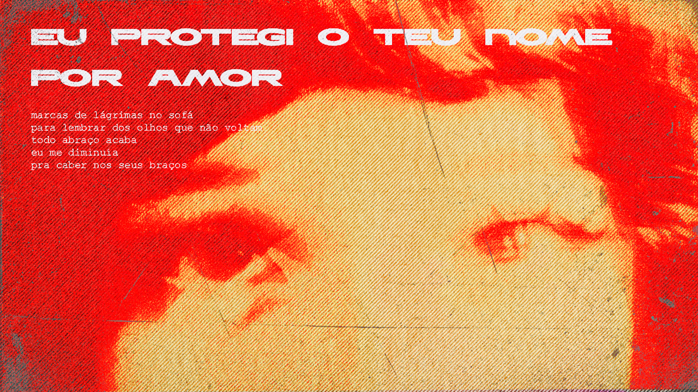

Sem Arte
A arte é uma forma de expressão humana marcada pela criatividade e habilidade técnica, originando-se do termo latino ars, que significa "técnica" ou "talento". Ela busca comunicar sentimentos, ideias, crenças ou críticas sociais, podendo ter caráter estético, emocional ou reflexivo. A definição de arte é subjetiva e varia conforme a cultura, a época e a interpretação do observador, permitindo múltiplas leituras de uma mesma obra.




A Alma Morre De Fome
A palavra "morrer" é um verbo que significa deixar de viver; perder a vida; cessar a existência. Pode ser usado de forma transitiva, como em "o rio morreu", ou intransitiva, como em "a planta simplesmente morreu". Além disso, "morrer" pode se referir a um sentimento intenso, como "morrer de amor". Sinônimos incluem falecer, expirar e sucumbir.